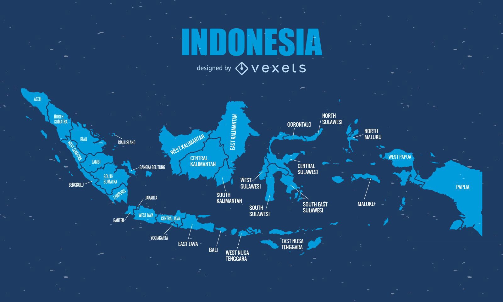
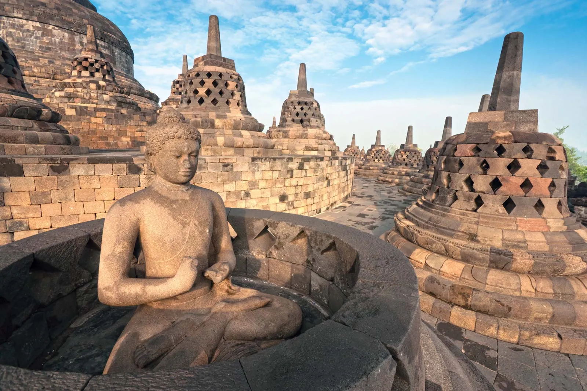
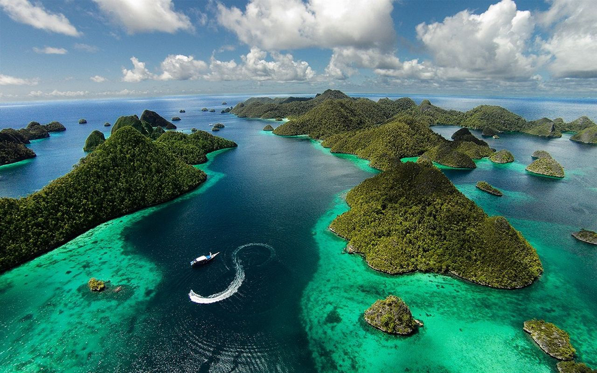

Pesona Nusantara: Jelajahi Keindahan Indonesia
Destinasi Unggulan

Nikmati keberagaman alam dan budaya!
Selamat Datang!
Indonesia, negara kepulauan terbesar di dunia, menawarkan keindahan alam dan warisan budaya yang tak tertandingi. Dari pantai eksotis hingga pegunungan megah, mari kita jelajahi permata Nusantara!
Bali: Pulau Dewata

Bali terkenal dengan keindahan **pantai, sawah terasering, dan keunikan budaya** Hindu-nya. Kunjungi tempat ikonik seperti **Pura Uluwatu** dan **Ubud**.
Lihat Detail BaliCandi Borobudur
Situs warisan dunia UNESCO di Jawa Tengah. Borobudur adalah **candi Buddha terbesar di dunia** yang menyimpan ribuan relief menakjubkan.
Fakta Singkat Borobudur
| Lokasi | Tinggi | Dibangun Abad |
|---|---|---|
| Magelang, Jawa Tengah | 35 meter | Ke-8 & Ke-9 |
Raja Ampat
Terletak di Papua Barat, Raja Ampat adalah surga bagi penyelam. Dikenal memiliki **keanekaragaman hayati laut tertinggi** di dunia.
Lihat Detail Raja Ampat© 2023 Promosi Wisata Indonesia | Dibuat dengan HTML dan CSS Dasar oleh raihan safrilio Insani